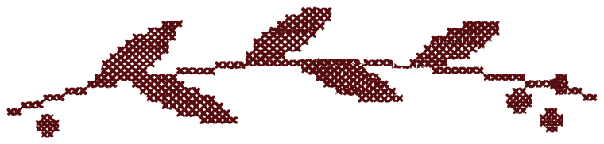
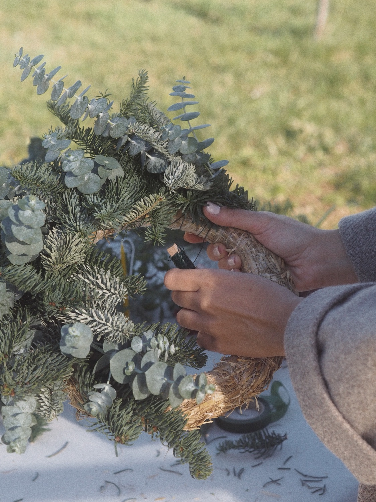
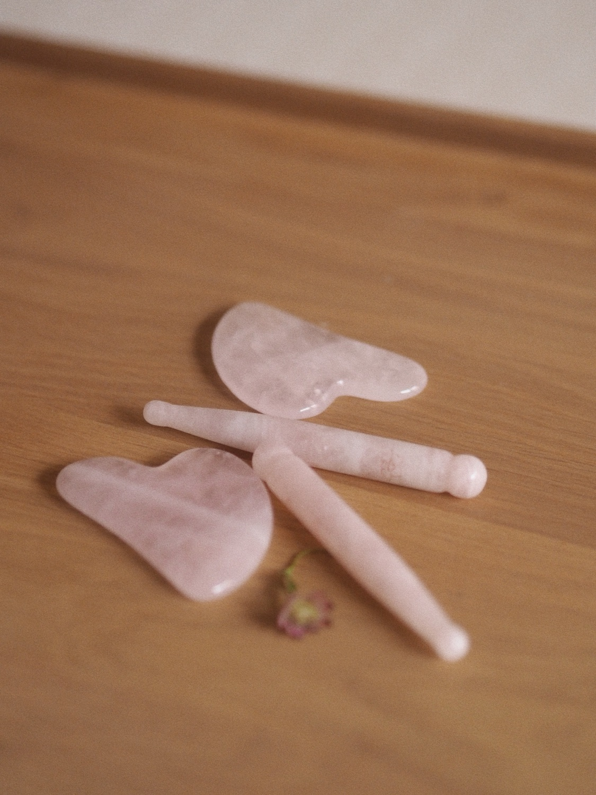
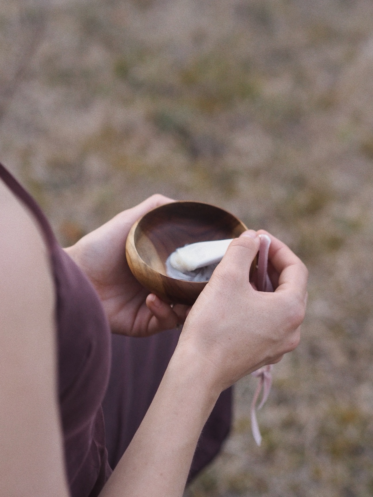
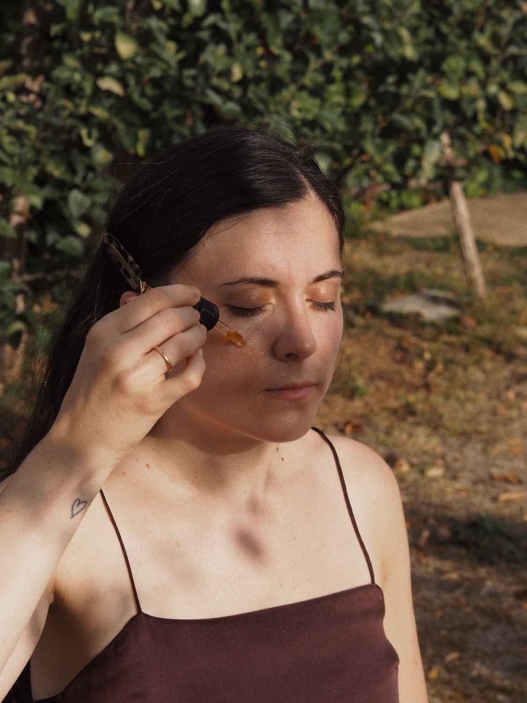

Olaia, de Verbena
Prensa flores y compone láminas botánicas. Pasa el día entre plantas, y tiene un ojo para esto que ya verás.
Ven a disfrutar con nosotras de una mañana navideña y de autocuidado
Una mañana para ti. Empezamos haciendo una corona de Navidad con Olaia. Usaremos materiales naturales, que secan bien y nos aseguran poder disfrutar de nuestra corona toda la temporada. Después pasamos a un rato de autocuidado y Sarai nos enseñará a hacernos un ritual de masaje muy glowy. Todo esto en un lugar acogedor donde disfrutaremos también de un rico desayuno.
Quiero mi plazaDe 10:00 a 13:00 · Sitio por confirmar

Ya sabes cómo se pone diciembreEntre una y otra hay solo tres horas. Y las pasamos juntas.
No hace falta que seas manitas ni que sepas nada de masajes. Te lo enseñamos todo paso a paso.




Prensa flores y compone láminas botánicas. Pasa el día entre plantas, y tiene un ojo para esto que ya verás.
Bióloga molecular y bioquímica, y fundadora de GAROA. Enseña a cuidar la piel entendiendo lo que pasa en ella.
Solo hay 12 plazas y cuando se acaban, se acaban.
Precio con todo incluido. Pásale esto a tu madre, a tu hermana o a la amiga que siempre dice que no tiene tiempo.
Reservar mi plaza Te contestamos por email con los pasos para confirmar tu plaza. Si tienes alguna alergia, cuéntanoslo al reservar.Mejor, así nos reímos un rato. Olaia te acompaña en todo el proceso y la corona te queda bien seguro.
Solo a ti. Nosotras ponemos el material. Ponte ropa cómoda, que vamos a trabajar con ramas.
Lo más fácil es que vengas con la cara lavada, porque el masaje se hace con aceite. Si vienes maquillada, te lo quitas allí, que tendremos desmaquillante.
Claro, y además os sale mejor de precio: en pareja o en trío pagáis menos cada una. Reservad todas en el mismo email.